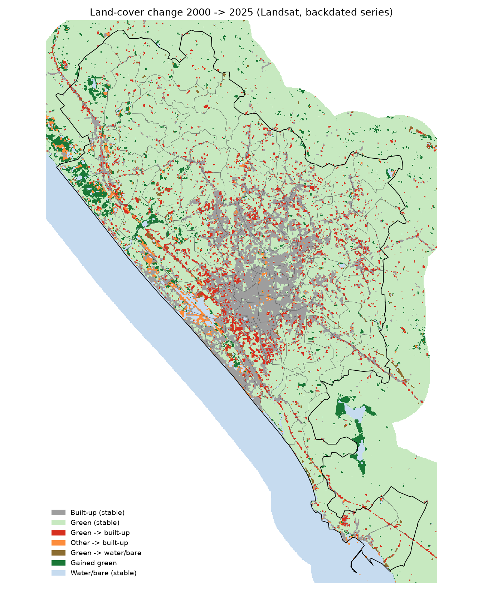
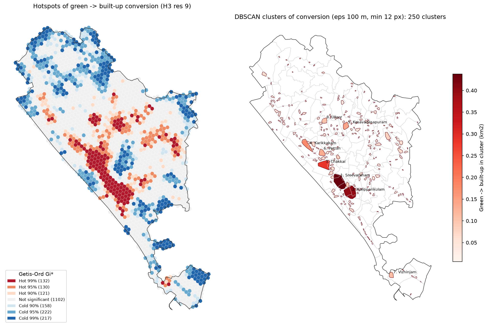
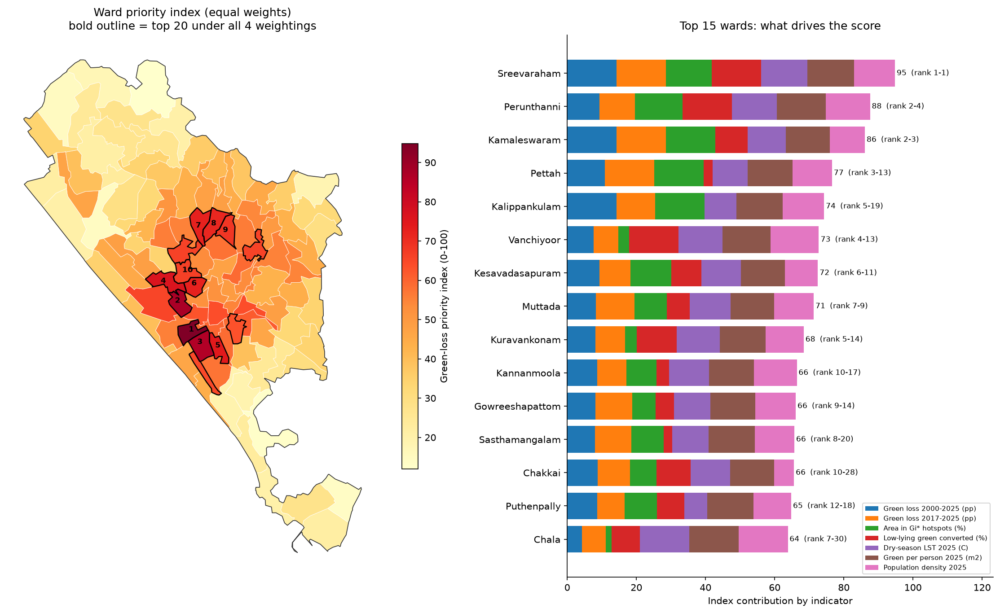

Abstract. We measured how much green cover Thiruvananthapuram Municipal Corporation (101 wards, 212.7 km²) lost to urban expansion between 2000 and 2025, where the loss happened, and why. Dry-season Landsat (2000, 2010, 2017, 2025) and Sentinel-2 (2019, 2025) composites were built in Google Earth Engine and classified with Random Forest. A temporally consistent series was produced by backdating from the 2025 map and calibrating the change threshold against the Global Human Settlement Layer. The pixel data (up to 4 million points) were processed with Apache Sedona on Spark and PostgreSQL/PostGIS. Spatial statistics (Getis-Ord Gi*, DBSCAN), FP-Growth association rules and a ward priority index turned the results into decision support. Built-up land rose from 15.6% to 22.9% of the corporation while green cover fell from 77.7% to 74.2% (net −7.4 km²); 12.2 km² of green land became built-up. The conversion is clustered in the southern and central wards, concentrated near roads and existing built-up land, and is associated with higher land surface temperature. The pace of loss slowed from 0.71 km²/yr (2000–2010) to 0.52 km²/yr (2017–2025).
Keywords: urban expansion; green space; Landsat; Sentinel-2; Random Forest; Apache Sedona; PostGIS; spatial partitioning; association rules; hotspot analysis.
Thiruvananthapuram, the capital of Kerala, is an unusually green city. Most of its land is not open countryside but homestead land: houses set among coconut palms, fruit trees and small paddy fields. This mixed pattern makes urban growth hard to see from above. A new house often replaces only part of a garden, and the canopy that remains can hide it. Over the last 25 years the city has grown along the national highway, around the Technopark IT corridor in the north, and towards the Vizhinjam port in the south. The question is how much green cover this growth has consumed, and in which wards.
Green space matters for the city in three concrete ways. It lowers surface temperature, it lets low-lying paddy and wetland absorb monsoon water, and it is a direct measure of liveability (green area per person). Ward councillors and the corporation's planning office need these numbers at ward level, not as a single city-wide figure.
The problem is also a big-data problem. One Sentinel-2 composite of the study area holds about 7 million 10 m pixels per band, and the analysis joins millions of pixels with ward polygons, road networks and 203,000 building footprints. Such joins are the core workload of spatial big-data systems. The project therefore had two aims:
The study area is the Thiruvananthapuram Municipal Corporation, using the 2024 K-SMART ward delimitation (local body code C010100, 101 wards). Census 2011 wards do not match these boundaries, so population came from WorldPop gridded estimates summed to each ward. Roads, land-use tags and building footprints came from OpenStreetMap (Geofabrik southern-zone extract). All layers were projected to UTM zone 43N (EPSG:32643). Personal fields in the ward file (surveyor names and phone numbers) were dropped.
For each epoch we built a median composite of all clear dry-season (November–April) observations in Google Earth Engine, to avoid monsoon cloud. Landsat 5 and 7 were combined over two dry seasons for 2000 and 2010, because one season of Landsat 5 alone gave no usable scenes for 2000. Landsat 8 was used for 2017, Landsat 8 and 9 for 2025, and Sentinel-2 L2A with Cloud Score+ masking (cs_cdf ≥ 0.60) for 2019 and 2025. Every composite covers ≥98.6% of the area with a median of 7–29 clear observations per pixel. NDVI, NDBI and MNDWI were added to the six reflectance bands.
Five classes were mapped: built-up, tree cover, other vegetation, water and bare/sand. Global reference products disagree strongly in this city: Dynamic World labels about 80% of the corporation as built-up, whereas ESA WorldCover labels most of it as trees, because both see the same coconut-canopy homesteads differently. Training labels for Sentinel-2 were therefore taken only where WorldCover and Dynamic World agree, with an extra check against GHSL built-up density. Landsat labels were taken from the Sentinel-2 2025 map aggregated to 30 m, so that both resolutions share one definition of each class. A Random Forest (200 trees, √p features per split) was trained on about 7,000 points per image, sampled in spatial blocks, and tested on about 3,000 held-out points. Land surface temperature was not used as a feature because Landsat LST is missing over roughly 20% of the area in every year.
Maps classified independently for each year gave a nearly flat built-up trend (20.9% → 22.9%), which contradicts GHSL (13.2% → 21.3%). This is a known problem: small classification errors in each year add up to false change. We instead started from the 2025 map and stepped back one epoch at a time. A pixel keeps its later class unless its spectral change vector between the two composites exceeds a threshold (k standard deviations); only then does it take its own year's classification. We tested k from 0 to 1.5 and chose k = 0.25, the value whose built-up trend fits GHSL best (squared error 0.011). Tree cover and other vegetation cannot be separated reliably at 30 m, so the results report total green (tree + other vegetation).
Each 30 m pixel (451,000 in the corporation) and each 10 m pixel (4.04 million) was turned into a point carrying its class history. These points were processed in two systems:
EXPLAIN ANALYZE.Ward totals from Sedona, PostGIS and the raster pipeline were cross-checked; they differed by at most 0.46 percentage points.
Table 1. Random Forest accuracy on held-out test points.
| Composite | Train / test points | Overall accuracy | Kappa | F1 built-up | F1 tree | F1 other veg. | F1 water |
|---|---|---|---|---|---|---|---|
| Sentinel-2 2019 | 6,857 / 3,143 | 0.959 | 0.948 | 0.926 | 0.966 | 0.924 | 1.000 |
| Sentinel-2 2025 | 6,786 / 3,214 | 0.958 | 0.947 | 0.962 | 0.933 | 0.944 | 1.000 |
| Landsat 2000 | 6,989 / 3,011 | 0.709 | 0.635 | 0.722 | 0.692 | 0.428 | 0.984 |
| Landsat 2010 | 6,741 / 3,259 | 0.757 | 0.696 | 0.699 | 0.738 | 0.509 | 0.960 |
| Landsat 2017 | 6,990 / 3,010 | 0.823 | 0.778 | 0.724 | 0.814 | 0.592 | 0.994 |
| Landsat 2025 | 7,154 / 2,846 | 0.819 | 0.773 | 0.771 | 0.817 | 0.609 | 0.993 |
Test labels come from the same reference products as the training labels, so these figures measure agreement with the reference, not with field data.
Sentinel-2 maps reach 96% accuracy. Landsat accuracy is lower (71–82%) and falls for older images, mainly because “other vegetation” is confused with tree cover (F1 0.43–0.61). This is why the results combine the two into total green. Built-up and water are classified consistently across all years.
Table 2. Green-cover change in the corporation (backdated Landsat series, km²).
| Period | Green at start | Green at end | Green lost | of which to built-up | Green gained | Net change | Loss per year |
|---|---|---|---|---|---|---|---|
| 2000–2010 | 165.15 | 161.50 | 7.10 | 5.26 | 3.44 | −3.65 (−2.2%) | 0.71 |
| 2010–2017 | 161.50 | 159.35 | 4.37 | 2.94 | 2.22 | −2.15 (−1.3%) | 0.62 |
| 2017–2025 | 159.35 | 157.72 | 4.19 | 3.43 | 2.56 | −1.63 (−1.0%) | 0.52 |
| 2000–2025 | 165.15 | 157.72 | 13.34 | 12.17 | 5.91 | −7.43 (−4.5%) | 0.53 |
Built-up land grew from 33.2 km² (15.6%) in 2000 to 48.8 km² (22.9%) in 2025, an increase of 47%. Green cover fell from 77.7% to 74.2%. Of the 13.3 km² of green that disappeared, 12.2 km² (91%) became built-up; the rest became water or bare land. Some loss was offset by 5.9 km² of new green, mostly former bare and sandy land along the north-western coast. The rate of loss slowed in each period, from 0.71 to 0.52 km² per year.

Table 3. Point-in-polygon join of pixels to 101 wards: run time in seconds.
| Points | Spark nested loop | Sedona broadcast R-tree | Sedona Quadtree | Sedona KDB-tree | GeoPandas (STRtree) |
|---|---|---|---|---|---|
| 0.10 M | 4.4 | 0.31 | 0.67 | 1.13 | 0.04 |
| 0.50 M | 19.6 | 0.37 | 1.93 | 3.03 | 0.31 |
| 1.00 M | 40.2 | 0.71 | 3.83 | 6.56 | 0.76 |
| 4.04 M | 192.0 | 3.00 | 17.56 | 34.00 | 1.63 |
A spatial index is the decisive factor. At 4 million points, Sedona's broadcast R-tree join is 64 times faster than plain Spark. Because the ward layer is small (101 polygons), broadcasting it to every worker beats partitioned joins. Of the two partitioners, Quadtree produced more balanced partitions than KDB-tree (coefficient of variation of points per partition 0.44 vs 1.79) and ran twice as fast. Spark's default hash partitioning gives perfectly equal partition sizes, but each partition spans almost the whole city (99.9% of the extent), so it gives no spatial pruning at all. On a single laptop GeoPandas is still the fastest. At this data size Sedona's value lies in how it scales to a cluster and to larger areas, not in raw single-machine speed.
Table 4. PostGIS queries with and without a GiST index (seconds).
| Query | No index | GiST index | Speed-up |
|---|---|---|---|
| 451 k pixels → wards (point-in-polygon) | 4.29 | 0.53 | 8× |
| 203 k building centroids → wards | 20.60 | 0.87 | 24× |
| Range query: converted pixels within 1 km of Technopark | 0.073 | 0.009 | 8× |
| KNN: nearest main road for sampled green pixels | 14.54 | 0.13 | 114× |
| Partitioned table: 1 of 30 partitions vs all 30 | 0.076 | 0.010 | 8× |
In PostGIS the GiST index turns sequential scans into index scans; the KNN query gains most (114×) because the <-> operator can walk the index in distance order. Partition pruning reads 1 of 30 partitions when the query filters on the partition key. PostGIS and Sedona gave the same green→built-up total (12.17 km²).
Conversion is strongly clustered (Moran's I = 0.485 for hexagons, 0.343 for wards; p = 0.001). Gi* found 262 hot hexagons at the 95% level (115 after FDR correction), holding 4.55 km² of conversion. DBSCAN grouped 57.5% of all converted pixels into 250 compact clusters. The largest are in Sreevaraham (0.44 km²), Kalippankulam (0.40 km²) and Chakkai (0.28 km²), all in the south of the core near the bypass and the airport. Cold spots—places that kept their green—lie on the northern, eastern and southern edges of the corporation.

Distance to a road is a strong predictor. Green land within 100 m of a road was converted at 12.4%, compared with 2.3% at 1–2 km. Land within 250 m of a road accounts for 61% of all conversion.
Table 5. Strongest FP-Growth rules (182,192 transactions; base conversion rate 7.42%).
| Antecedent (green pixel in 2000) | Outcome | Area (km²) | Confidence | Lift |
|---|---|---|---|---|
| high built-up around it & <3 km from centre & flat | → built-up | 1.35 | 39.4% | 5.31 |
| high built-up around it & elevation <10 m | → built-up | 1.67 | 35.4% | 4.76 |
| high built-up around it & flat & high ward density | → built-up | 2.21 | 35.2% | 4.75 |
| high built-up around it & elevation 10–30 m | → built-up | 7.78 | 29.8% | 4.02 |
| OSM land use = forest | → stayed green | 2.46 | 99.3% | 1.07 |
| OSM land use = agriculture | → stayed green | 2.69 | 99.3% | 1.07 |
| >10 km from centre | → stayed green | 34.51 | 97.1% | 1.05 |
FP-Growth found 146 rules for conversion and 17 for staying green. The leading condition is infill: green land already surrounded by built-up land in 2000 was converted at 27%, against 3.5% where surroundings were green. Flat, low land near the centre was converted most often. Land tagged in OSM as forest, agriculture or wetland almost always stayed green.
The top five wards on the priority index are Sreevaraham (95/100), Perunthanni (88), Kamaleswaram (86), Pettah (77) and Kalippankulam (74), all in the southern part of the core. The ranking is stable: across the four weighting schemes Spearman correlation with the equal-weight ranking is at least 0.967, and 16–19 of the top 20 wards stay in the top 20.

Thiruvananthapuram lost about 4.5% of its green cover in 25 years. This is modest compared with the 47% growth of built-up land, because the city started very green and much new building took place inside existing homesteads. The loss is not spread evenly. It is concentrated in a belt south and west of the old core (Sreevaraham, Kalippankulam, Kamaleswaram, Chakkai, Pettah) and along the highways, where several wards lost 18–30 percentage points of their green cover. The association rules and road-distance results describe the same process: the city fills in gaps next to existing development and along roads, rather than leaping into open countryside. The slowing rate of loss after 2010 may reflect that the remaining green near the core is now scarce, not a change in policy; the data cannot separate these explanations.
The heat case study gives the loss a practical consequence. Converted land warmed 1.6 °C more than land that stayed green, and the greenest wards are clearly the coolest. Protecting the remaining green in the priority wards, which are also among the hottest and densest, therefore has a direct cooling benefit. Land recorded as agriculture, forest or wetland in OSM almost always stayed green, which suggests that formal land-use designation is an effective form of protection.
The benchmarks support three lessons from the course. First, a spatial index matters more than the choice of engine: an R-tree in Sedona or a GiST index in PostGIS gave 8–114 times speed-ups, while plain Spark without spatial support scaled poorly. Second, spatial partitioning must follow the data: hash partitioning balances load but ignores space, while Quadtree partitions adapted to the dense urban core. Third, for a single city at 4 million points a single machine is still enough; Sedona becomes necessary when the same workflow is extended to the whole state, to 10 m pixels for every year, or to building-level analysis. PostGIS was the most convenient for repeated, indexed ward and distance queries, while Spark was the natural place to run FP-Growth over 182,000 transactions. Running the same analysis in both systems also served as a correctness check.
Between 2000 and 2025 Thiruvananthapuram converted 12.2 km² of green land to built-up, mostly through infill near roads and existing development in the southern and central wards. These wards are also the hottest and have the least green per person. The ward priority index, stable across weightings, gives the corporation a defensible short-list of wards for green-space protection and tree planting. Future work should add field or high-resolution validation points, use building footprints over time to capture conversion hidden under canopy, extend the workflow to the surrounding panchayats on a real Spark cluster, and update the dashboard each dry season.